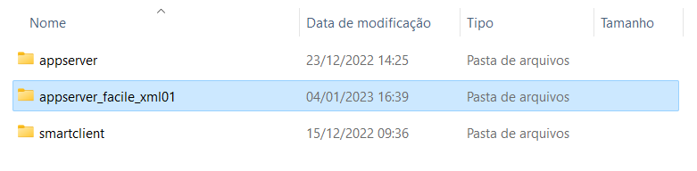
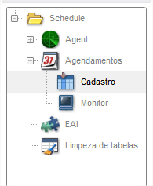
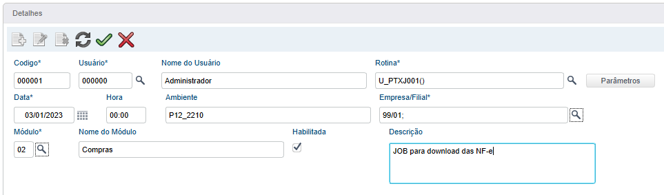
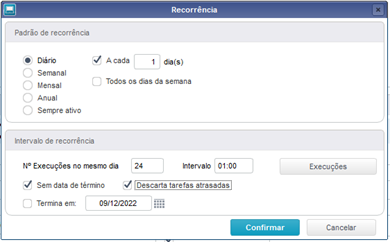
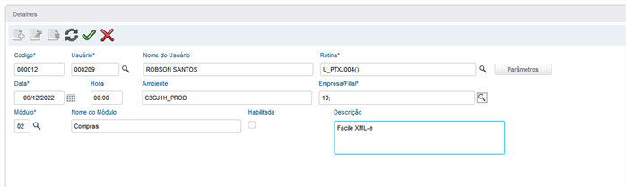

👾Configurando os Jobs
Os Jobs são responsáveis pela automatização dos processos na ferramenta, como por exemplo, buscar as chaves e os seus respectivos XML diretamente do SEFAZ e também outros processos como workflows e CheckDoc.
Existem duas opções para configuração dos jobs, sendo via ONSTART no appserver.ini (recomendado) ou via Schedule do ERP.
Via OnStart no AppServer.ini
Nesse modo os JOBs serão executados diretamente no appserver em questão e em intervalos de acordo com um prazo configurado (não é possível configurar o número de execuções e nem o horário exato da execução igual no Schedule).
Para um melhor resultar e evitar conflitos de processamento, recomendamos criar dois appservers exclusivos para execução desses Jobs, sendo:
-
Appserver_Facile_Xml01: Responsável pelo download dos documentos
-
Appserver_Facile_Xml02: Responsável pela revalidação dos documentos
Obs.: Os nomes das pastas do appserver aqui mencionados são apenas sugestões, fique a vontade para altera-los.
Vamos configurar:
Appserver_Facile_Xml01
Crie um novo appserver baseado no appserver de produção e renomeie para "appserver_facile_xml01".

Entre na pasta criada e altere o arquivo appserver.ini configurando RPO exclusivo para esse serviço e no final do arquivo configure os JOBs conforme abaixo:
;;Job Responsável por baixar as NF-e no Sefaz
[PTXJ001]
MAIN=U_PTXJ001
ENVIRONMENT=PRODUCAO
nparms=2
Parm1=01
Parm2=0101
;;Job responsável por realizar o download do CT-e no Sefaz
[PTXJ003]
MAIN=U_PTXJ003
ENVIRONMENT=PRODUCAO
nparms=2
Parm1=01
Parm2=0101
;;Tag responsável por inicializar e controlar os jobs
[ONSTART]
JOBS=PTXJ001,PTXJ003
REFRESHRATE=4000
Explicando as TAGs
MAIN => Nome do programa ser chamado
ENVIRONMENT => Ambiente que o JOB será execuado
nparms => Quantidade de parâmetros a serem utilizados
Parm1 => Informe o código da empresa (igual ao cEmpAnt)
Parm2 => Informe o código da primeira filial (igual ao cFilAnt)
REFRESHRATE => Intervalo de tempo (em segundos) para que execução do JOB
Basta salvar o appserver.ini com essas alterações.
Appserver_Facile_Xml02
Crie um novo appserver baseado no appserver de produção e renomeie para "appserver_facile_xml02".

Entre na pasta criada e altere o arquivo appserver.ini configurando RPO exclusivo para esse serviço e no final do arquivo configure os JOBs conforme abaixo:
;;Job Responsável por revalidar os documentos no Sefaz
[PTXJ004]
MAIN=U_PTXJ004
ENVIRONMENT=PRODUCAO
nparms=2
Parm1=01
Parm2=0101
;;Tag responsável por inicializar e controlar os jobs
[ONSTART]
JOBS=PTXJ004
REFRESHRATE=4000
Explicando as TAGs
MAIN => Nome do programa ser chamado
ENVIRONMENT => Ambiente que o JOB será execuado
nparms => Quantidade de parâmetros a serem utilizados
Parm1 => Informe o código da empresa (igual ao cEmpAnt)
Parm2 => Informe o código da primeira filial (igual ao cFilAnt)
REFRESHRATE => Intervalo de tempo (em segundos) para que execução do JOB
Basta salvar o appserver.ini com essas alterações.
Via Schedule do ERP
Acesse o ambiente Configurador (SIGACFG)
Ambiente > Schedule > Schedule
Obs.: O serviço de schedule e seu Agent já deve estar configurados e funcionando, segue documentação oficial:
Schedule - Como agendar a execução de rotinas - Frameworksp - TDN
Acesse a visão "Schedule > Agendamentos > Cadastro"

PTXJ001 - Baixa de NF-e
Deve ser configurado um agendamento do PTXJ001 para cada grupo de empresas e selecionar apenas a primeira filial.
Exemplo:
Empresa 01 e possui as filiais 0101, 0102 e 0103
O campo "Empresa/Filial" ficará: 01/0101;
Realize o cadastro do primeiro JOB seguindo o exemplo abaixo:

Lembre-se de alterar o "Ambiente" e "Empresa/Filial" conforme o seu cenário.
Antes de confimar o cadastro, vamos configurar a recorrência do JOB (clicando no botão parecido com: 🔄️).
Na tela de recorrência:

Obs.: O SEFAZ por padrão bloqueio consultas repetidas em menos de 1 hora de intervalo.
Agora sim podemos confirmar a tela de recorrência e a tela de cadastro do agendamento ✔️.
PTXJ003 - Baixa de CT-e
Deve ser configurado um agendamento do PTXJ003 para cada grupo de empresas e selecionar apenas a primeira filial.
Exemplo:
Empresa 01 e possui as filiais 0101, 0102 e 0103
O campo "Empresa/Filial" ficará: 01/0101;
Realize o cadastro do segundo JOB seguindo o exemplo abaixo:

Lembre-se de alterar o "Ambiente" e "Empresa/Filial" conforme o seu cenário.
Antes de confimar o cadastro, vamos configurar a recorrência do JOB (clicando no botão parecido com: 🔄️).
Na tela de recorrência:
Obs.: O SEFAZ por padrão bloqueio consultas repetidas em menos de 1 hora de intervalo.
Agora sim podemos confirmar a tela de recorrência e a tela de cadastro do agendamento ✔️.
PTXJ004 - Revalidação de NF-e e CT-e
Deve ser configurado um agendamento do PTXJ003 para cada grupo de empresas e selecionar apenas a primeira filial.
Exemplo:
Empresa 01 e possui as filiais 0101, 0102 e 0103
O campo "Empresa/Filial" ficará: 01/0101;
Realize o cadastro do terceiro JOB seguindo o exemplo abaixo:

Lembre-se de alterar o "Ambiente" e "Empresa/Filial" conforme o seu cenário.
Antes de confimar o cadastro, vamos configurar a recorrência do JOB (clicando no botão parecido com: 🔄️).
Na tela de recorrência:
Obs.: O SEFAZ por padrão bloqueio consultas repetidas em menos de 1 hora de intervalo.
Agora sim podemos confirmar a tela de recorrência e a tela de cadastro do agendamento ✔️.
RPO do JOB
O RPO do ambiente que executa os JOBs precisa estar com o patch da ferramenta aplicado e recomendamos que não seja compartilhado com outros ambientes. No caso do Schedule, irá utilizar o próprio RPO do ambiente Schedule e também necessita do patch aplicado.
Obs.: Os appserver.ini criados deverão apontar para esse RPO com o patch aplicado.
Parâmetros de autenticação
Deverá ser configurado os parâmetros abaixo com as credenciais fornecidas pela Facile Sistemas:
ZZ_AUTHLOG
Descrição: Usuário para autenticação na Facile Sistemas
ZZ_AUTHPSW
Descrição: Senha para autenticação na Facile Sistemas
Ainda não tem as credenciais?
Basta enviar um e-mail para: xmle@facilesistemas.com.br